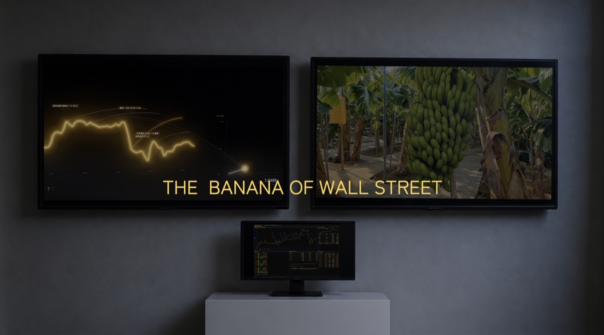

Overview
- Artist: Atsuya Tsuchida
- Format: Installation
- Year: 2026
Concept
本作は、資本主義の歴史を体現するバナナの価格変動を、株式市場で自動取引する独自開発のAIシステムに学習させ、その判断を元に自分が実際に投資を行うことで、資本主義とAIの新たな見方を提示する作品である。
バナナは、その生産と流通の歴史をたどると、輸送技術の発達、プランテーション経営と労働搾取、大量消費に基づく生態系の単純化など、近代資本主義の展開と深く結びついた作物だといえる。
一方、株式は資本主義が歴史的に築き上げてきたシステムの一つであり、その動態を可視化する存在でもある。
本作品では、AIによる株式自動取引システムを通じてバナナと金融市場を結びつけることで、資本主義の新たな捉え方を模索するとともに、利益を最優先する通常の自動取引とは異なるオルタナティブなAIの使い方を試みることで、この時代におけるAIと人間の関わり方についても再考する。
Composition
本作は、2つの映像作品と1つのリアルタイムソフトウェアの計3点で構成される。
①データビジュアライゼーション — 学習データであるバナナの価格変動と、それを引き起こした世界の出来事、そして毎月の投資判断との因果関係を可視化する映像作品。どの月の価格変動がどの判断を動かしたかを測定によって特定し、通常のアルゴリズム取引との比較まで示すことで、客観的なデータから本作を捉えることを目的とする。
②ビデオエッセイ — 実際に投資を行う作家自身の記録と、バナナ農園でのフィールドワークの映像を記録した作品。AIによって下される投機的判断と、バナナが生まれる産地の記録を同じ空間に置くことで、数値の背後にある現実を可視化する。投資という社会的な意味合いでの身体性を通した作品への関与と、バナナが生産されて我々の元へ届くまでのストーリーを取り込むことで、様々なレイヤーから作品を体験することを狙う。
③リアルタイムソフトウェア — 本作のために開発し、現在も運用している取引システムそのものを展示する。記録された映像だけでなく、判断を下し続けている機械そのものを置くことで、鑑賞者は本作を動かしているAIを目撃することになる。